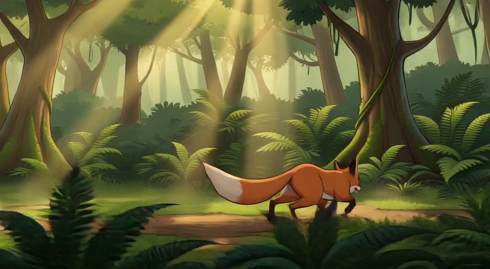

预期尾帧：
实际末帧：

Vision 建议 minor（仅证据，人工裁定为准）
| expected_tail_match | CLOSE - fox is stopping but not yet at rest position; ears are up but body language suggests motion continuing |
| character_pose_state | Fox is standing still but not yet fully stationary - appears to be mid-deceleration rather than completely stopped |
| character_position | Fox positioned on the path in the middle ground, facing right as expected |
| next_shot_readiness | Ready for next shot to begin from this near-stationary position |
| identity_consistency | The fox is correctly depicted with orange fur, white-tipped tail, and characteristic fox features |
| environment_consistency | Forest path environment matches expected setting with dappled sunlight, ferns, and trees |
| unexpected_elements | None - all elements align with expected storyboard direction |
执行者备注：2D 风格继承链根；朝向右侧符合预期；姿态为中途减速奔跑而非完全站定（收势未完成）。下一镜 N2 预编剧首句「狐狸忽然停下」已含自然过渡，可直接吸收该偏离。
人工裁定（三档）：none=按预编剧继续 / minor=下一镜加过渡 / major=插情节拉回。 把裁定发我或在对话里回复即可（例：「N1 minor 继续」）。